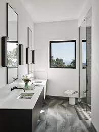

How and where do I like to use my candles? There are many great ways to utilize how you use your candles. Here I will be going over how and where I use my candles.
On my desk.

I love to use my candles while I game or do work. Usually I will leave a candle on my desk next to me lit for anywhere between 1-2 hours. It helps relax the mood in the room as well as keep my hands warm.
In the bathroom.

A candle is a great product to make a room smell better. I often leave one in my room after I use the bathroom or after I take a shower to freshen up the scent of the room.
Watching a movie.
I love to turn the lights off and light a few candles in the room while I watch a movie. It makes the enviornment great and feel more cozy.
Eating dinner. .
What better place to have a candle lit then eating a nice dinner with loved ones? I feel that candlelight at dinner adds elegence and softness to my dining experiences.